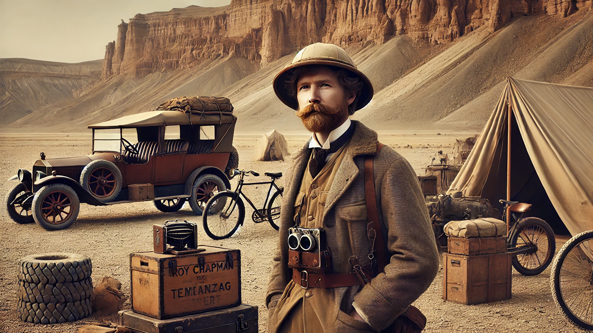

Эртний Түүхийн Үүд Хаалга
02
1920-иод онд судлаач Рой Чапман Эндрюс анхны үлэг гүрвэлийн өндгийг илрүүлсэнээр Галтай Хадан Цохионууд дэлхийн анхаарлыг татсан түүхтэй. Энэхүү нээлт нь бидний эртний амьдралыг ойлгоход томоохон хувь нэмэр оруулж, уг бүс нутгийг дэлхийн өвд бүртгэхэд хүргэсэн юм.
Энд хөл тавьж буй хүн бүр түүхийн мөрөөр алхаж, гайхамшигт нээлтүүд гарсан газар дээр зогсох сэтгэл хөдлөлийг мэдэрнэ. Эдгээр хадан цохионуудаар аялснаар та геологи болон соёлын онцгой үнэт зүйлсийг олж харах болно.
Дэлгэрэнгүй →
Энд хөл тавьж буй хүн бүр түүхийн мөрөөр алхаж, гайхамшигт нээлтүүд гарсан газар дээр зогсох сэтгэл хөдлөлийг мэдэрнэ. Эдгээр хадан цохионуудаар аялснаар та геологи болон соёлын онцгой үнэт зүйлсийг олж харах болно.